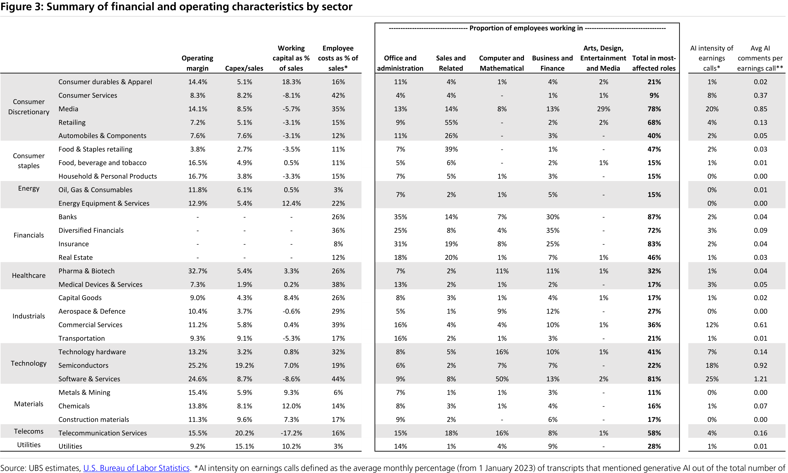
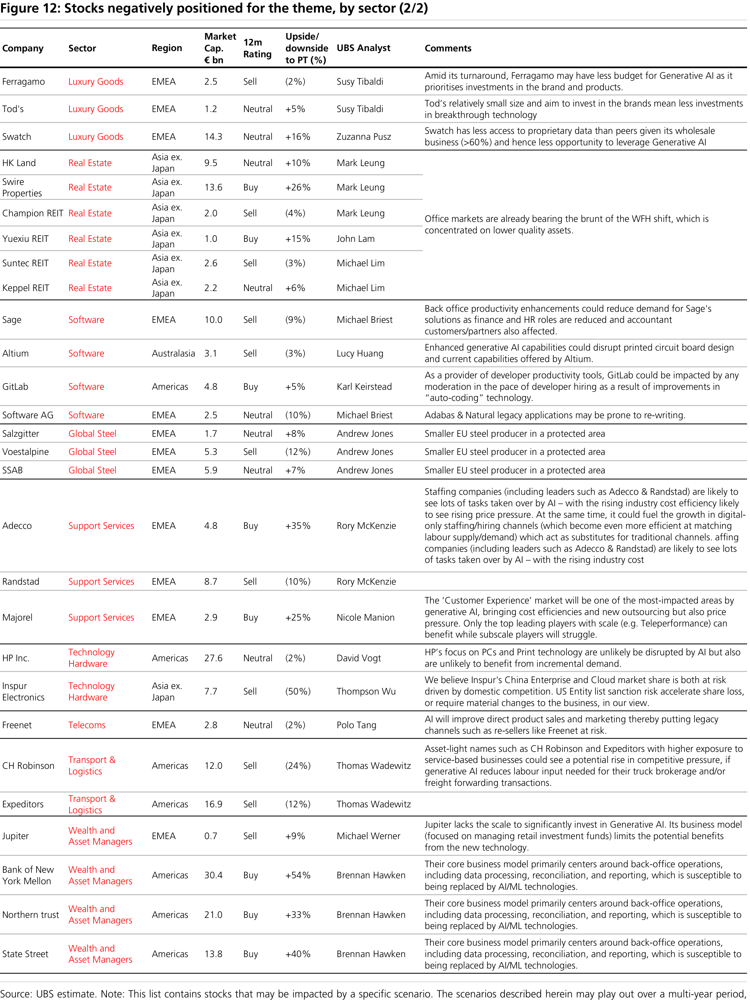
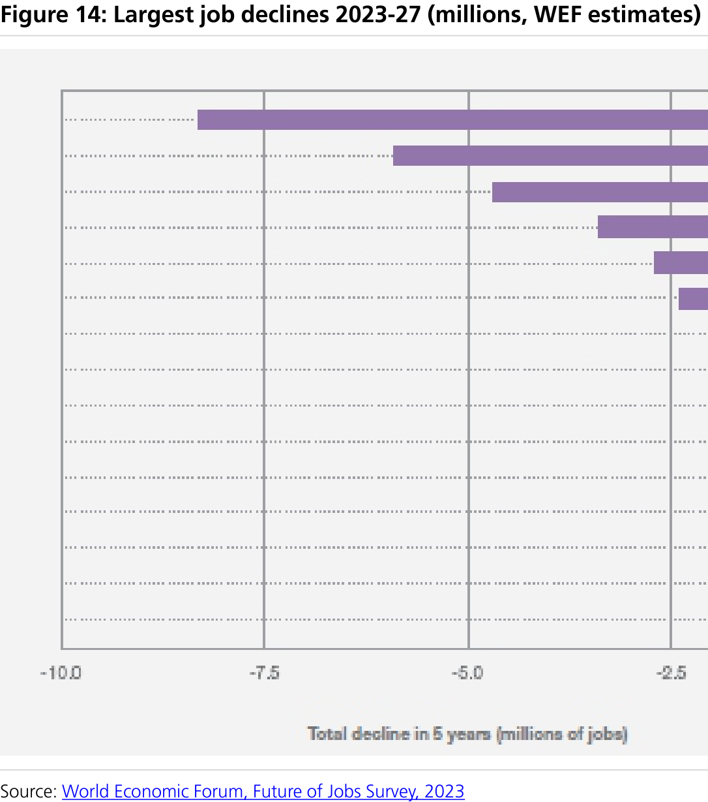
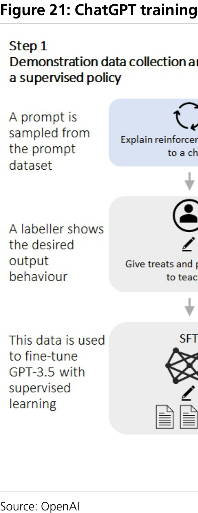

a b
Q-Series Will Generative AI deliver a generational transformation?
Identifying the sectors that will be most impacted by generative AI
The potential of AI has been hotly debated for many years, particularly regarding automation and the workforce impact. Many UBS sector analysts think that generative AI (ie. AI that can create text, video etc.) has the potential to intensify competitive pressures, with 18 of 32 teams expecting this outcome, while 19 see a potential for higher revenues. All but one ( Internet ) see an opportunity for cost reduction. AI and ChatGPT since the start of 2023 found that the sectors with the highest incidence were Software & Services , Media & Internet , Commercial Services , Semis and
Consumer Services (leisure, gaming, education etc.). Employee costs are substantial as a proportion of sales (30%-plus) in all these sectors bar Semis, while US Bureau of Labor statistics suggest Media & Internet and Software & Services – alongside Banks and
Insurance – have the greatest proportion of their workforces exposed to potential automation. Analysts in Capital Goods , Luxury , Medical Devices , Mining , Real Estate , Retail , Semis , Technology Hardware and Telecoms all see positive impacts on growth and costs, and no change to competition. In particular, Retail 's low margins and high proportion of employees in relevant occupations may make it a key beneficiary.
Generative AI could lead to a surge in competitive intensity...
While not a "digital god", Generative AI's capabilities have advanced at a remarkable pace. The costs of developing and training models today typically run to many millions of dollars, but open-source models are gaining ground and adoption of the technology appears set to be swift. Concurrently, synthetic data could empower start-ups to challenge incumbents whose historical data repositories are perhaps less of a moat now than once seemed the case. This may mean some of the anticipated cost savings made
...as it transforms the workplace and accelerates the pace of innovation
Much has been written about the potential impact of generative AI on the workforce: Accenture estimates that 40% of all working hours could be impacted, ranging from 9% to 63% of the typical workday. Generative AI will have other effects too. IT analyst Gartner predicts that by 2025 (1) 30% of new drugs and materials will be discovered using generative AI techniques and (2) 30% of outbound marketing messages from large organisations will be synthetically generated; and (3) by 2027, nearly 15% of new applications will be automatically generated by AI without human involvement. It is worth noting that such a potential transformation continues a long trend of automation, with the World Economic Forum estimating in 2022 that 34% of all business-related tasks were being performed by machines. Potential impediments to adoption exist too, including (1) regulation; (2) intellectual property, privacy and ethical considerations; and (3) the accuracy of results. This is covered in more detail here by our ESG team.
Identifying the most and least favoured companies across sectors
In this report, UBS sector analysts discuss in detail how they see generative AI impacting their sectors. They identify over 180 companies they believe will be impacted, either positively or negatively.
Global Research and Evidence Lab
Equities
Global
====================================================================================================
Contents
Executive Summary . . . . . . . . . . . . . . . . . . . . . . . . . . . . . . . . . . . 2
Generative AI – a new GPT?. . . . . . . . . . . . . . . . . . . . . . . . . . . . 15
Views by Sector . . . . . . . . . . . . . . . . . . . . . . . . . . . . . . . . . . . . . 23
Aerospace & Defence . . . . . . . . . . . . . . . . . . . . . . . . . . . . . . . . . . . . . 24
Automobiles & Components. . . . . . . . . . . . . . . . . . . . . . . . . . . . . . . . 26
Banks. . . . . . . . . . . . . . . . . . . . . . . . . . . . . . . . . . . . . . . . . . . . . . . . . 27
Building & Construction . . . . . . . . . . . . . . . . . . . . . . . . . . . . . . . . . . . 29
Capital Goods. . . . . . . . . . . . . . . . . . . . . . . . . . . . . . . . . . . . . . . . . . . 30
Chemicals. . . . . . . . . . . . . . . . . . . . . . . . . . . . . . . . . . . . . . . . . . . . . . 33
Consumer Staples. . . . . . . . . . . . . . . . . . . . . . . . . . . . . . . . . . . . . . . . 35
Exchanges & Financial Business Services. . . . . . . . . . . . . . . . . . . . . . . . 38
FinTech & Payments. . . . . . . . . . . . . . . . . . . . . . . . . . . . . . . . . . . . . . . 41
Food Retail. . . . . . . . . . . . . . . . . . . . . . . . . . . . . . . . . . . . . . . . . . . . . 43
General Retail. . . . . . . . . . . . . . . . . . . . . . . . . . . . . . . . . . . . . . . . . . . 46
Insurance . . . . . . . . . . . . . . . . . . . . . . . . . . . . . . . . . . . . . . . . . . . . . . 49
IT Services. . . . . . . . . . . . . . . . . . . . . . . . . . . . . . . . . . . . . . . . . . . . . . 53
Internet . . . . . . . . . . . . . . . . . . . . . . . . . . . . . . . . . . . . . . . . . . . . . . . 55
Leisure . . . . . . . . . . . . . . . . . . . . . . . . . . . . . . . . . . . . . . . . . . . . . . . . 60
Luxury Goods. . . . . . . . . . . . . . . . . . . . . . . . . . . . . . . . . . . . . . . . . . . 61
Media. . . . . . . . . . . . . . . . . . . . . . . . . . . . . . . . . . . . . . . . . . . . . . . . . 63
Medical Devices, Services & Life Sciences . . . . . . . . . . . . . . . . . . . . . . . 66
Mining. . . . . . . . . . . . . . . . . . . . . . . . . . . . . . . . . . . . . . . . . . . . . . . . 70
Oil & Gas . . . . . . . . . . . . . . . . . . . . . . . . . . . . . . . . . . . . . . . . . . . . . . 72
Pharmaceuticals & Biotechnology . . . . . . . . . . . . . . . . . . . . . . . . . . . . 75
Real Estate . . . . . . . . . . . . . . . . . . . . . . . . . . . . . . . . . . . . . . . . . . . . . 77
Restaurants. . . . . . . . . . . . . . . . . . . . . . . . . . . . . . . . . . . . . . . . . . . . . 80
Semiconductors . . . . . . . . . . . . . . . . . . . . . . . . . . . . . . . . . . . . . . . . . 82
Software . . . . . . . . . . . . . . . . . . . . . . . . . . . . . . . . . . . . . . . . . . . . . . 84
Steel. . . . . . . . . . . . . . . . . . . . . . . . . . . . . . . . . . . . . . . . . . . . . . . . . . 88
Support Services. . . . . . . . . . . . . . . . . . . . . . . . . . . . . . . . . . . . . . . . . 90
====================================================================================================
Technology Hardware . . . . . . . . . . . . . . . . . . . . . . . . . . . . . . . . . . . . . 93
Telecoms . . . . . . . . . . . . . . . . . . . . . . . . . . . . . . . . . . . . . . . . . . . . . . 95
Transport & Logistics. . . . . . . . . . . . . . . . . . . . . . . . . . . . . . . . . . . . . . 99
Utilities. . . . . . . . . . . . . . . . . . . . . . . . . . . . . . . . . . . . . . . . . . . . . . . 102
Wealth & Asset Managers. . . . . . . . . . . . . . . . . . . . . . . . . . . . . . . . . 104
Appendix. . . . . . . . . . . . . . . . . . . . . . . . . . . . . . . . . . . . . . . . . . 107
====================================================================================================
Q-Series UBS Research
Executive Summary
We return to the AI theme, this time focusing on generative AI
Having written about sector exposures to the impact of AI in 2018, we return to the theme in this Q-Series report, focusing exclusively on generative AI. It summarises the observations of UBS sector analysts on: (1) adoption trends of generative AI in their coverage sectors; (2) the companies they believe may be better or less well-placed to exploit the technology; and (3) provides a framework for investors to understand different sectors' relative exposures to the risks and opportunities posed. UBS Evidence Lab found that on earnings calls since January this year, nearly 500 companies in 27 sectors have made over 3,500 references to generative AI and/or ChatGPT, notably in
Software & Services, Media, Commercial Services, Semis and Consumer Services (leisure, gaming and education services). Generative AI is set to automate or augment the roles of many knowledge workers. In all these sectors but Semis, employee costs are high as a proportion of sales and – in the US at least – over three quarters of the workforce in the Software & Services and Media sectors work in roles most prone to be impacted.
Less than five years ago ( link ), we wrote on the disruption that firms would likely experience as AI matured and adoption grew. Back then, 29 sector research teams at UBS identified key AI-related opportunities and threats that were most relevant to their sectors, as well as the companies they thought were best-placed to capitalise on or prove vulnerable to them. In light of the rapid adoption of generative AI, evident in the phenomenal take-up of OpenAI’s ChatGPT
(1) we asked our sector teams to revisit their
views (Figure 1).
Generative AI can create, classify and condense text, image and audio content, and can generate “synthetic data” used to accelerate AI training
In 2018, we discussed the impact of all forms of AI in areas such as autonomous vehicles, computer vision and collaborative robots. In this note we are focused more narrowly on generative AI, of which ChatGPT is arguably the most well-known example. Generative AI is capable of creating, classifying and condensing content including text, image and audio. It is also used to generate “synthetic data” – new artificial data based on key facets within a smaller sample of real data, that is typically used to accelerate the training of other AI programmes and avoid potential issues around privacy that arise when using primary data.
1. ChatGPT reached an unparalleled 100m unique visitors a month just two months after launch, recently surpassed 200m after five months, and is averaging over 30m daily active users
Figure 1: ChatGPT user adoption trend
====================================================================================================
Occupation profiles:
Labour intensity:
Starting efficiency levels:
Synthetic data democratises the use of AI beyond organisations with large data sets
Waymo
American Express
Roche
Siemens
Open-source generative AI models are maturing rapidly and may lower the cost of adoption
Sector conclusions
Cost savings are seen as the most likely outcome from generative AI advances...
====================================================================================================
… just as in 2018
Figure 2: Bottom-up sector conclusions on impact of generative AI
====================================================================================================
Q-Series
Figure 3: Summary of financial and operating characteristics by sector
====================================================================================================
Q-Series
Figure 4: Summary of sector analyst expectations for the impact of generative AI
====================================================================================================
Q-Series
Figure 5: Summary of sector analyst expectations for the impact of generative AI (continued)
====================================================================================================
Figure 6: Stocks favourably positioned for the theme (1/5)
====================================================================================================
Figure 7: Stocks favourably positioned for the theme (2/5)
====================================================================================================
Figure 8: Stocks favourably positioned for the theme (3/5)
====================================================================================================
Figure 9: Stocks favourably positioned for the theme (4/5)
====================================================================================================
Figure 10: Stocks favourably positioned for the theme (5/5)
====================================================================================================
Figure 11: Stocks negatively positioned for the theme, by sector (1/2)
====================================================================================================
Figure 12: Stocks negatively positioned for the theme, by sector (2/2)
====================================================================================================
Generative AI – a new GPT?
A new general-purpose technology (GPT)?
Generative AI will have a direct impact on the pharmaceutical, manufacturing, media, architecture, interior design, engineering, automotive, aerospace, defense, medical, electronics and energy industries by augmenting core processes with AI models. Generative AI will impact marketing, design, corporate communications, training and software engineering by augmenting these supporting processes that span many organizations
Labour automation or augmentation
Accenture estimates that 40% of all working hours could be impacted by LLMs
office and administrative sales and related computer and mathematical business and financial operations arts, design, environmental, sports and media
====================================================================================================
Q-Series
Figure 13: Occupation by sector - a US profile (2022)
====================================================================================================
WEF sees up to 26m roles at risk over the next five years
cashiers and ticket clerks data-entry accounting book-keeping and payroll clerks administrative and executive secretaries
Change is constant
Adoption plans
Accenture reported that six in 10 organisations plan to use ChatGPT for learning purposes in 2023
Figure 14: Largest job declines 2023-27 (millions, WEF estimates)
====================================================================================================
Figure 15: Proportion of transcripts containing a reference to artificial intelligence
Figure 16: References to generative AI by sector (1 Jan. 22 to 17 May 23)
====================================================================================================
Software & Services Media & Internet Support Services
Semiconductors Consumer Services
Casetext
Microsoft
Cadence
AutoDesk
Heinz Coca-Cola
Figure 17: Trend in visits to coding/developer forums
Figure 18: Trend in visits to homework assistance websites
====================================================================================================
ESG considerations and barriers to adoption
(1) Regulation
Many nations and international organisations looking into regulation of AI. Industry players seem receptive
====================================================================================================
(2) Intellectual property and copyright
Several lawsuits are ongoing related to copyright law
(3) Accuracy and "hallucinations"
====================================================================================================
(4) Ethical concerns and bias
(5) Malicious uses and cyber threats
====================================================================================================
Views by Sector
====================================================================================================
UBS Research THESIS MAP
Q: Where is the greatest opportunity from Generative AI in Aerospace & Defence?
Cost reductions:
Safety improvements:
Product innovation:
Q: What is the biggest threat from Generative AI to Aerospace & Defence?
Demand reduction:
Supply chain disruptions:
Skill shortages:
Geopolitical leadership:
Q: What are companies in Aerospace & Defence already doing with Generative AI?
Predictive analytics:
Computer vision and virtual reality:
Q: Which stocks are better or less favourably positioned through the application of Generative AI?
====================================================================================================
Q: What else should investors consider?
Ian Douglas-Pennant
Kseniia Maslova
====================================================================================================
UBS Research THESIS MAP
Q: Where is the greatest opportunity from Generative AI in global autos?
Q: What is the biggest threat from Generative AI to global autos?
Q: What are companies in global autos already doing with Generative AI?
Q: Which stocks are better or less favourably positioned through the application of Generative AI?
Q: What else should investors consider?
Patrick Hummel, CFA
David Lesne
Paul Gong
Kohei Takahashi
Yoon Cho
====================================================================================================
UBS Research THESIS MAP
Q: Where is the greatest opportunity from Generative AI in banks?
Q: What is the biggest threat from Generative AI to banks?
Q: What are companies in banks already doing with Generative AI?
BCA, BMRI, BRI, Indonesia:
BNP Paribas, France:
CIMB, Malaysia:
DBS, Singapore:
Erste Bank, Austria:
EQT, Partners Group, Switzerland:
JPMorgan, US:
Morgan Stanley, US:
SCB X, Thailand:
====================================================================================================
TCB, Vietnam:
BPI, Philippines:
Q: Which stocks are better or less favourably positioned through the application of Generative AI?
Q: What else should investors consider?
Jason Napier
Thiago Batista
Gil Kim
Erika Najarian
Brennan Hawken
Stephan Potgieter
Aakash Rawat
May Yan
====================================================================================================
UBS Research THESIS MAP
Q: Where is the greatest opportunity from Generative AI in Building & Construction?
Overhead costs
Predictive plant maintenance
Enhancement of BIM
Automated building design:
Optimized customer service and targeting:
Q: What is the biggest threat from Generative AI to Building & Construction?
Risk to legacy operators:
Changed demand for buildings
Q: What are companies in Building & Construction already doing with Generative AI?
Q: Which stocks are better or less favourably positioned through the application of Generative AI?
Q: What else should investors consider?
Gregor Kuglitsch
John Lovallo
Robin Xu
====================================================================================================
UBS Research THESIS MAP
Q: Where is the greatest opportunity from Generative AI in Global Capital Goods?
Q: What is the biggest threat from Generative AI to Capital Goods?
Q: What are companies in Global Capital Goods already doing with Generative AI?
====================================================================================================
Q: Which stocks are better or less favourably positioned through the application of Generative AI?
====================================================================================================
Q: What else should investors consider?
Guillermo Peigneux-Lojo
Sven Weier
Chris Snyder
Steven Fisher
Phyllis Wang
Damian Karas
Amit Mahawar
Yongsuk Son
Hikaru Mizuno
Rory Smith
====================================================================================================
UBS Research THESIS MAP
Q: Where is the greatest opportunity from Generative AI in Chemicals?
Product innovation:
Procurement:
Manufacturing/Operations:
Opening new distribution channels:
Q: What is the biggest threat from Generative AI to Chemicals?
Microwave Chemical Co
====================================================================================================
Q: What are companies in Chemicals already doing with Generative AI?
Production Innovation: BASF Covestro Corteva Givaudan
Procurement: BASF
Manufacturing/operations: Sinopec Group Air Liquide LG Energy Solution,
New distribution channels: BASF
Q: Which stocks are better or less favourably positioned through the application of Generative AI?
Andrew Stott
Geoff Haire
Joshua Spector
Tim Bush
Shunta Omura
Amily Guo
Charles Eden
Priyanka Patel
Lucas Beaumont
James Cannon
Christopher Perrella
Richard Li
Cheryl Wen
====================================================================================================
UBS Research THESIS MAP
Q: Where is the greatest opportunity from Generative AI in Consumer Staples?
Consumer data analytics:
Growth and innovation driver:
Cost optimisation:
Q: What is the biggest threat from Generative AI to Consumer Staples?
New disruptive entrants:
Own-product cannibalisation:
Q: What are companies in Consumer Staples already doing with Generative AI?
Innovation: L’Oréal Beiersdorf Nestlé Campbell Soup, Mondelez, Kraft Heinz, Conagra Brands McCormick Co
Route-to-market:
Heineken Coca Cola Europacific Partners (CCEP) Carlsberg
====================================================================================================
Value-chain: Heineken Rémy Cointreau CCEP
Reckitt
Proctor & Gamble Yum China Sun Art Retail Sun Art Retail
A&P: The Coca-Cola Co Heineken, Diageo Campari L’Oréal’s Proctor & Gamble
Q: Which stocks are better or less favourably positioned through the application of Generative AI?
Q: What else should investors consider?
Nik Oliver
Peter Grom
Guillaume Delmas
Charles Eden
====================================================================================================
Robert Krankowski
Kate Rusanova
Cody Ross
Allison LaFleur
Andrei Condrea
Bryan Adams
Christine Peng
Thyra Lee
====================================================================================================
UBS Research THESIS MAP
Q: Where is the greatest opportunity from Generative AI in Exchanges and financial business services?
Q: What is the biggest threat from Generative AI to Exchanges and financial business services?
====================================================================================================
Q: What are companies in Exchanges and financial business services already doing with Generative AI?
LSEG:
SPGI:
SPGI:
SSNC:
NDAQ:
VRSK:
MSCI:
HKEX:
Q: Which stocks are better or less favourably positioned through the application of Generative AI?
====================================================================================================
Mike Werner
Alex Kramm
Sam Tang
====================================================================================================
UBS Research THESIS MAP
Q: Where is the greatest opportunity from Generative AI in FinTech and payments?
Fraud detection:
Personalized user engagement:
Customer support:
Knowledge retrieval:
Q: What is the biggest threat from Generative AI to FinTech and payments?
Q: What are companies in FinTech and payments already doing with Generative AI?
====================================================================================================
Q: Which stocks are better or less favourably positioned through the application of Generative AI?
Q: What else should investors consider?
Rayna Kumar
Michael Briest
Kaio Prato,
Anthony Cyganovich
Antoine Hucher
Karandeep Singhania
====================================================================================================
UBS Research THESIS MAP
Q: Where is the greatest opportunity from Generative AI in Food retail sector?
Q: What is the biggest threat from Generative AI to Food retail sector?
Q: What are companies in Food retail sector already doing with Generative AI?
====================================================================================================
Europe:
Australia/Asia:
Americas:
Q: Which stocks are better or less favourably positioned through the application of Generative AI?
Q: What else should investors consider?
Sreedhar Mahamkali
Hai Huynh
Michael Lasser
====================================================================================================
Mark Carden
Vinicius Strano
Shaun Cousins
Jarrod Chisholm
Jaehyung Choi
Christine-Y Peng
Voila Yang
====================================================================================================
UBS Research THESIS MAP
Q: Where is the greatest opportunity from Generative AI in general retail?
Q: What is the biggest threat from Generative AI to general retail?
====================================================================================================
Q: What are companies in general retail already doing with Generative AI?
WMT :
LOW:
HD:
WOOF:
ZALG :
KGF:
DNLM :
NKE:
LEVI:
Q: Which stocks are better or less favourably positioned through the application of Generative AI?
====================================================================================================
Michael Lasser
Jay Sole
Sreedhar Mahamkali
Mauricio Serna
Nozomi Moriya
Vinicius Strano
Christine Peng
Shaun Cousins
Saranja Sivachelvam
Jennifer Han
====================================================================================================
UBS Research THESIS MAP
Q: Where is the greatest opportunity from Generative AI in Insurance?
====================================================================================================
Q: What is the biggest threat from Generative AI to Insurance?
====================================================================================================
Q: What are companies in Insurance already doing with Generative AI?
Munich Re
Zurich
Prudential
Voya
Q: Which stocks are better or less favourably positioned through the application of Generative AI?
====================================================================================================
Will Hardcastle
Brian Meredith
Kelvin Chu
Scott Russell
Justin Tucker
====================================================================================================
UBS Research THESIS MAP
Q: Where is the greatest opportunity from Generative AI in IT Services?
Q: What is the biggest threat from Generative AI to IT Services?
Sales mix of leading IT Services players, CY22
====================================================================================================
Q: What are companies in IT Services already doing with Generative AI?
Q: Which stocks are better or less favourably positioned through the application of Generative AI?
Michael Briest
Rayna Kumar
Shaleen Kumar
Jun Tanabe
Kathinka de Kuyper
Anthony Cyganovich
Aditya Kulkarni
====================================================================================================
UBS Research THESIS MAP
Q: Where is the greatest opportunity from Generative AI in the Internet sector?
====================================================================================================
Q: What is the biggest threat from Generative AI to the Internet sector?
Q: What are companies in the Internet sector already doing with Generative AI?
Alphabet (GOOGL/GOOG):
Search:
====================================================================================================
Bard:
GCP:
Workspace:
Ad Tech:
Amazon (AMZN):
Meta (META):
Snap (SNAP):
Shopify (SHOP):
Expedia (EXPE):
====================================================================================================
Alibaba (BABA):
Tencent (700):
Baidu (BIDU):
Grab (GRAB):
GoTo (GOTO):
Zomato (ZOMATO):
MakeMyTrip (MMYT):
Sea Ltd (SE):
Q: Which stocks are better or less favourably positioned through the application of Generative AI?
====================================================================================================
Q: What else should investors consider?
US Internet
Lloyd Walmsley
Chris Kuntarich
Kunal Madhukar
Esha Vaish
Nicole Phang
Rachel Freeman
China Internet
Jerry Liu
Wie Xiong
Arafat Alafate
ASEAN & India Internet
Navin Killa
Taranvir Singh
EMEA Internet
Richard Eary
Adam Berlin
====================================================================================================
UBS Research THESIS MAP
Q: Where is the greatest opportunity from Generative AI in Leisure?
Q: What is the biggest threat from Generative AI to leisure?
Q: What are companies in Catering and Hotels already doing with Generative AI?
Accor IHG Whitbread
Compass Sodexo
Flutter Entain
Q: What else should investors consider?
Jarrod Castle
Louise Wiseur
====================================================================================================
UBS Research THESIS MAP
Q: Where is the greatest opportunity from Generative AI in Luxury?
Online customer services:
In-store purchasing behaviour analytics:
Cost optimization:
Demand forecasting and inventory management:
Q: What is the biggest threat from Generative AI to Luxury?
Sector polarisation:
Customer data privacy:
People and culture:
====================================================================================================
Q: What are companies in Luxury already doing with Generative AI?
Q: Which stocks are better or less favourably positioned through the application of Generative AI?
Q: What else should investors consider?
Zuzanna Pusz
Susy Tibaldi
Chris Huang
Zenande Meyiwa
====================================================================================================
UBS Research THESIS MAP
Q: Where is the greatest opportunity from Generative AI in Media
Entertainment:
Music:
Gaming:
Publishing:
Advertising:
Q: What is the biggest threat from Generative AI to Media
Entertainment:
====================================================================================================
Music:
Gaming:
Publishing:
Advertising:
Q: What are companies in Media already doing with Generative AI?
Entertainment:
Music:
Gaming:
Publishing:
====================================================================================================
Advertising:
Q: Which stocks are better or less favourably positioned through the application of Generative AI?
Richard Eary
Adam Berlin
John Hodulik
Batya Levi
Lloyd Walmsley
Jerry Liu
Felix Liu
====================================================================================================
UBS Research THESIS MAP
Q: Where is the greatest opportunity from Generative AI in Healthcare?
We view Generative AI as transformational within Healthcare.
Medical Devices
Diagnostic
Genomics
====================================================================================================
Internet Healthcare
Health Care Services Managed Care
Q: What is the biggest threat from Generative AI to Healthcare?
Q: What are companies in Healthcare already doing with Generative AI?
US Medical Devices: ISRG: JNJ ZBH:
EU Medical Devices:
China Medical Devices:
CROs and Drug Discovery:
====================================================================================================
Genomics (ILMN, OMIC, TMO, PACB, QGEN):
Spatial Names (TXG, AKYA, NSTG):
Managed Care:
Health Care Providers:
Q: Which stocks are better or less favourably positioned through the application of Generative AI?
====================================================================================================
Q: What else should investors consider?
Abridge:
Woebot:
Generate Biomedicines:
Paige.AI:
Insilico Medicine:
Danielle Antalffy
Kevin Caliendo
Chen Chen
Graham Doyle
Elizabeth Garcia
Andrew Mok
John Sourbeer
====================================================================================================
UBS Research THESIS MAP
Q: Where is the greatest opportunity from Generative AI in Mining?
Q: What is the biggest threat from Generative AI to Mining?
Q: What are companies in Mining already doing with Generative AI?
ANGLO AMERICAN
RIO TINTO
====================================================================================================
BHP
ALCOA
FREEPORT
VALE
Q: Which stocks are better or less favourably positioned through the application of Generative AI?
Q: What else should investors consider?
Myles Allsop
Daniel Major
Lachlan Shaw
Andreas Bokkenheuser
Sharon Ding
====================================================================================================
UBS Research THESIS MAP
Q: Where is the greatest opportunity from Generative AI in Oil & Gas?
cost opportunity
better predictive maintenance
accelerate project development time
subsurface data
support functions
retail
modelling
Q: What is the biggest threat from Generative AI to Oil & Gas?
oil demand
maintenance
====================================================================================================
(IOCs') expertise
Q: What are companies in Oil & Gas already doing with Generative AI?
ExxonMobil Chevron
Shell Galp TotalEnergies BP Equinor Repsol
Halliburton Baker Hughes SLB
Petrobras
Q: Which stocks are better or less favourably positioned through the application of Generative AI?
IOCs OFS
incumbents or larger players
====================================================================================================
Q: What else should investors consider?
Henri Patricot
Christabel Kelly
Josh Silverstein
Luiz Carvalho
Amily Guo
====================================================================================================
UBS Research THESIS MAP
Q: Where is the greatest opportunity from Generative AI in Biopharma?
Q: What is the biggest threat from Generative AI to Biopharmaceuticals?
Q: What are companies in Biopharmaceuticals already doing with Generative AI?
====================================================================================================
Q: Which stocks are better or less favourably positioned through the application of Generative AI?
Q: What else should investors consider?
Michael Leuchten
Xian Deng
Eliana Merle
Ashwani Verma
====================================================================================================
UBS Research THESIS MAP
Q: Where is the greatest opportunity from Generative AI in Real Estate?
Q: What is the biggest threat from Generative AI to Real Estate?
====================================================================================================
Q: What are companies in the Real Estate sector already doing with Generative AI?
Prologis
Boston Properties
Equinix
UDR
Zillow
Q: Which stocks are better or less favourably positioned through the application of Generative AI?
====================================================================================================
Q: What else should investors consider?
Osmaan Malik, CFA
John Lam
Michael Lim
Michael Goldsmith
John Hodulik
Alex Kramm
Mark Leung
====================================================================================================
UBS Research THESIS MAP
Q: Where is the greatest opportunity from Generative AI in Restaurants?
Automated ordering:
Demand-based food preparation:
Innovation:
Q: What is the biggest threat from Generative AI to Restaurants?
Q: What are companies in Restaurants already doing with Generative AI?
MCD:
WEN:
====================================================================================================
DPZ:
CMG:
Q: Which stocks are better or less favourably positioned through the application of Generative AI?
Dennis Geiger
====================================================================================================
UBS Research THESIS MAP
Q: Where is the greatest opportunity from Generative AI in semiconductors?
Q: What is the biggest threat from Generative AI to semiconductors?
Q: What are companies in semiconductors already doing with Generative AI?
Q: Which stocks are better or less favourably positioned through the application of Generative AI?
====================================================================================================
Nicolas Gaudois
Timothy Arcuri
Sunny Lin
Patrick Rafaisz
Joern Iffert
Sebastian Vogel
Francois Bouvignies
====================================================================================================
UBS Research THESIS MAP
Q: Where is the greatest opportunity from Generative AI in Software?
Q: What is the biggest threat from Generative AI to Software?
====================================================================================================
Q: What are companies in Software already doing with Generative AI?
====================================================================================================
Q: Which stocks are better or less favourably positioned through the application of Generative AI?
Karl Keirstead
Michael Briest
Taylor McGinnis
Roger Boyd
Lucy Huang
Jun Tanabe
Guanyi Wang
Kathinka de Kuyper
====================================================================================================
Austin Deitz
Jeff Hickey
====================================================================================================
UBS Research THESIS MAP
Q: Where is the greatest opportunity from Generative AI in Steel?
Production process and cost optimization are the main fields of application…
…but also in predicting demand
Q: What is the biggest threat from Generative AI to global Steel?
Q: What are companies in global Steel already doing with Generative AI?
====================================================================================================
Q: Which stocks are better or less favourably positioned through the application of Generative AI?
Andrew Jones
Yong-Suk Son
Harunobu Goroh
Lee Power
Andreas Bokkenheuser
====================================================================================================
UBS Research THESIS MAP
Q: Where is the greatest opportunity from Generative AI in Business Support Services?
We primarily see Generative AI as a cost opportunity for the Business Services sector, although we also expect it to open up new service lines/outsourcing opportunities and cause deflation/disruption to some existing areas.
Staffing and Recruitment
Testing and Inspection
Outsourced Distribution
Facility Management and Security
Customer Management and BPO
Q: What is the biggest threat from Generative AI to Business Support Services?
====================================================================================================
Q: What are companies in Business Support Services already doing with Generative AI?
Outsourced CX (Teleperformance, Majorel, etc):
Staffing and Recruitment (Adecco, Randstad, Hays, Manpower, etc):
HR Tech and Recruitment platforms (Recruit, SEEK etc):
Credit Bureaux (Experian, Equifax, TransUnion):
Testing & Inspection (Bureau Veritas, Intertek, SGS, etc):
Q: Which stocks are better or less favourably positioned through the application of Generative AI?
====================================================================================================
Q: What else should investors consider?
Rory McKenzie
Nicole Manion
Abi Bell
Joshua Chan
Kenji Fukuyama
Lucy Huang
====================================================================================================
UBS Research THESIS MAP
Q: Where is the greatest opportunity from Generative AI in Technology Hardware?
Q: What is the biggest threat from Generative AI to Technology Hardware?
Q: What are companies in Technology Hardware already doing with Generative AI?
Q: Which stocks are better or less favourably positioned through the application of Generative AI?
====================================================================================================
Q: What else should investors consider?
David Vogt
Grace-H Chen
Thompson Wu
Francois Bouvignies
====================================================================================================
UBS Research THESIS MAP
Q: Where is the greatest opportunity from Generative AI in Telecoms?
Q: What is the biggest threat from Generative AI to Telecoms?
====================================================================================================
Q: What are companies in Telecoms already doing with Generative AI?
India: Bharti Airtel
Europe: Elisa Telenor Tele2
ANZ: Telstra’s Spark New Zealand
China: China Mobile
ASEAN: Singtel AIS
====================================================================================================
Japan: NTT KDDI
US: Verizon
Q: Which stocks are better or less favourably positioned through the application of Generative AI?
Q: What else should investors consider?
Navin Killa
Polo Tang
Ondrej Cabejsek
Lucy Huang
Phil Campbell
Hussaini Saifee
====================================================================================================
Sara Wang
Aditya Chandrasekar
Jun Tanabe
John Hodulik
Batya Levi
====================================================================================================
UBS Research THESIS MAP
Q: Where is the greatest opportunity from Generative AI in Transport?
Logistics/Post & Parcel:
Airlines:
Airports and Infrastructure:
====================================================================================================
Bus & Rail:
Q: What is the biggest threat from Generative AI to Transport?
Q: What are companies in Transport already doing with Generative AI?
Logistics:
Airlines:
Bus & Rail:
North American Freight Railroads:
Q: Which stocks are better or less favourably positioned through the application of Generative AI?
====================================================================================================
Q: What else should investors consider?
Cristian Nedelcu
Thomas Wadewitz
Jarrod Castle
Ivar Billfalk-Kelly
Amy Yi Li
====================================================================================================
UBS Research THESIS MAP
Q: Where is the greatest opportunity from Generative AI in US Utilities?
Q: What is the biggest threat from Generative AI to Utilities?
Q: What are companies in Utilities already doing with Generative AI?
====================================================================================================
Q: Which stocks are better or less favourably positioned through the application of Generative AI?
Q: What else should investors consider?
Ross Fowler
====================================================================================================
UBS Research THESIS MAP
Q: Where is the greatest opportunity from Generative AI in Wealth and asset managers?
Q: What is the biggest threat from Generative AI to Wealth and asset managers?
Q: What are Wealth and asset managers already doing with Generative AI?
====================================================================================================
Q: Which stocks are better or less favourably positioned through the application of Generative AI?
Q: What else should investors consider?
Mike Werner
Brennan Hawken
Michael Christelis
====================================================================================================
Appendix
Neural networks
Transformers/foundation models
Neural networks are machine learning algorithms with a structure that mimics the human brain
Transformers are neural networks that learn context
Figure 19: Relational landscape of generative AI
====================================================================================================
Large language models (LLMs)
Transformers are key in LLMs
LLMs can generate, summarise, translate text and other content
Figure 20: A foundation model can use a range of data types for various tasks
====================================================================================================
Tokenization:
Embedding:
Attention:
Pre-training:
Finetuning and transfer learning:
Autoregressive language models
Autoencoding language models
A combination of autoencoding and autoregressive models
Generative AI
Large language models can be expensive to train and run
Generative AI can create new and original content on demand
====================================================================================================
Generative pre-trained transformer (GPT)
OpenAI's GPT models predict the next word or imagine
GPT-4 can handle text and image inputs
Figure 21: ChatGPT training
====================================================================================================
Synthetic data
Synthetic data reflects real-world data mathematically or statistically
====================================================================================================
*UBS Evidence Lab
====================================================================================================
Valuation Method and Risk Statement
====================================================================================================